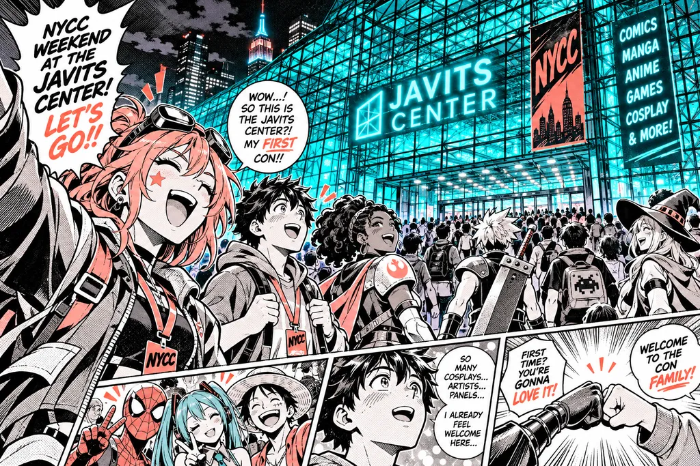
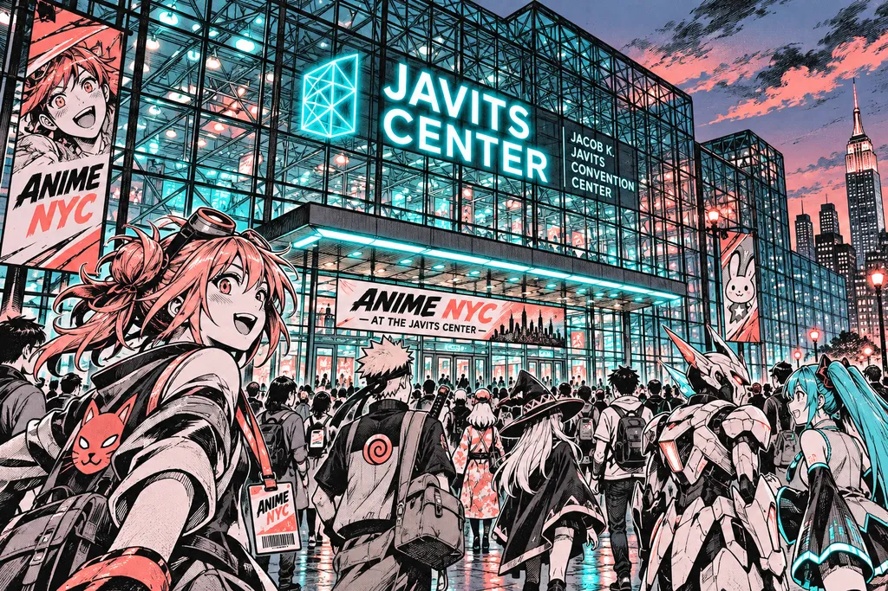
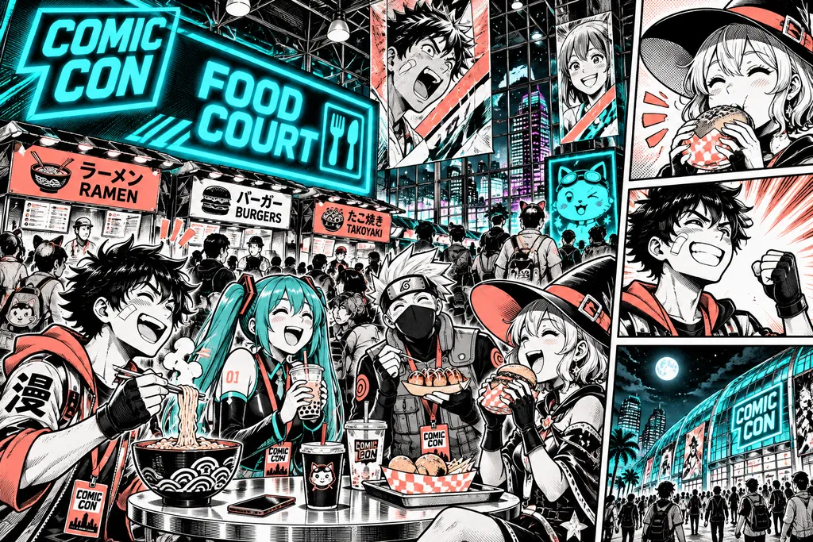

Plan Your Day
Javits Center, three subway lines, one badge, zero guesswork. Here's everything a first-timer needs: how to get in, when to queue, what to carry, and where to breathe.
Doors open 9:00 AM both days — Saturday badges sold out last year by January, so lock yours in early.


Entrances on 11th Ave at 34th and 38th St — look for the coral AniNYC signs.
Logistics
429 11th Ave, New York, NY 10001 — Halls 1A–3E, entrances on 11th Ave at 34th and 38th St.
7 train to 34th St–Hudson Yards, then a 6-minute walk west on 34th.
to 34th St–Penn Station, 10-minute walk.
to 34th St–Penn Station, same walk.
From Port Authority (A/C/E, 42nd St): 15 minutes on foot down 11th Ave.
LIRR and NJ Transit arrive at Penn Station — follow the coral AniNYC signs from the 33rd St concourse.
Driving? Pre-book Javits parking on 34th St between 11th and 12th; expect $45–$60 for the day.
Rideshare drop-off is 12th Ave at 36th St — not 11th Ave, it's con traffic only.
Pro move
Arrive before 8:15 AM and the Hudson Yards escalators are empty.
Hour by hour
Pick one anchor per block — everything else is bonus.
Arrive at 11th Ave, join the general queue (badge-holder line opens 8:15).
Doors. Walk straight to the Exhibit Hall before the aisles fill.
Panel block one — Voice Actor Main Stage, Hall 1A.
See who's on the Main StageFood court lull — eat now, lines triple after 12:30.
Artist Alley, rows 400–600, for commissions and sketches.
Cosplay photo meet at the Neon Alley backdrop, 38th St side.
Studio screening room, Hall 3C.
Dealers Hall clearance hour — vendors discount before close.
Closing ceremony, Main Stage.
Sunday swaps the 10:30 panel for the Cosplay Contest prelims at 11:00.
Set phone alarms for each block; the Javits Wi-Fi drops in the halls.
Cosplay & Prop Rules
Bring the outfit, leave the sharp edges.
All props are inspected at the Cosplay Prop Check desk inside the 34th St entrance — open 8:30 AM to 8:00 PM.
The Cosplay Repair Station in Hall 2B has hot glue, sewing kits and volunteer help, free all weekend.
Logistics
Food: the Javits food court (Hall 1 lobby) runs $12–$18 a plate with 20-minute lines at peak. Cheaper and faster: the Halal cart on 34th and 11th ($8–$10), Hudson Yards' Mercado level two blocks east, and the Pret at 37th St for grab-and-go.
Outside food and sealed water bottles are allowed — refill stations sit outside every hall.

Head to the coral Quiet Zone markers on every floor map — the nearest one is never more than a 4-minute walk.
Accessibility services
The Javits Center is fully wheelchair accessible: step-free entrances at 34th and 38th St, elevators to every hall level, and accessible restrooms on all floors.
ADA badge-holder line at the 34th St entrance — no queueing outside, a volunteer escorts you in from 8:30 AM.
Wheelchair and scooter rentals are free at the Guest Services desk, Hall 1 lobby, first come first served — reserve at least 48 hours ahead through the accessibility form on your badge confirmation.
ASL interpretation at every Main Stage panel and on request at Guest Services (2 hours' notice).
Assistive listening devices free with a photo ID.
Service animals welcome; relief area on the 38th St loading side.
Got a question now? Email access@aninyc.com — we answer within one business day.
Email access@aninyc.comFinal call
Grab your badge, screenshot your itinerary, and we'll see you at 8:15 on the 11th Ave line. Saturday is nearly gone — Sunday is still open.